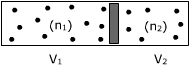
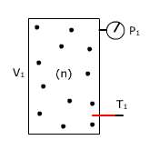
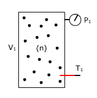
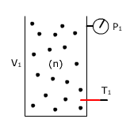
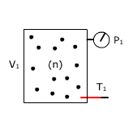
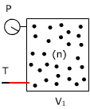
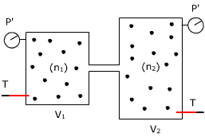

General
1Un recipiente de 50 l contiene gas a 27 ºC que desarrolla una presión de 2 kp/cm2. Se dejan escapar 2 moles del gas, calcula la temperatura a que debería ponerse el recipiente para restablecer la pre-sión inicial
Solución
 |
P1·V1 = n·R·T1 |
Combinando las dos expresiones obtenidas resulta un sistema con dos incógnitas: n, T2
$$\left.\begin{array}{l}P_1\,V_1=n\,R\,T_1\\[6pt] P_1\,V_1=(n-\Delta n)\,R\,T_2\end{array}\right\}\;\htmlData{pc-ac=ac1}{\boxed{T_2=\left(\frac{1}{T_1}-\frac{\Delta n\,R}{P_1\,V_1}\right)^{-1}}}$$
Sustituyendo valores:
$$T_2=\left(\frac{1}{300\ \mathrm{K}}-\frac{2\ \mathrm{mol}\;0{,}082\ \mathrm{at\,l/mol\,K}}{2/1{,}03\ \mathrm{at}\;50\ \mathrm{l}}\right)^{-1}=608\ \mathrm{K}$$
Habría que calentar el recipiente hasta 335 ºC

2Un cilindro de 60 l tiene en su interior un tabique móvil que lo divide en dos partes iguales en las que se introducen, respectivamente, 2 y 3 moles de gas a la misma temperatura. Calcula el volumen de cada parte cuando el tabique quede inmóvil
Solución
En la posición de equilibrio las presiones en las dos caras del tabique serán iguales
 |
$$\left.\begin{array}{l}P\,V_1=n_1\,R\,T\\[6pt] P\,V_2=n_2\,R\,T\\[6pt] V=V_1+V_2\end{array}\right\}\;\htmlData{pc-ac=ac3}{\boxed{V_1=\frac{n_1\,V}{n_2+n_1},\quad V_2=\frac{n_2\,V}{n_2+n_1}}}$$ |
$$\begin{aligned}&V_1=\frac{2\ \mathrm{mol}\;60\ \mathrm{l}}{(3+2)\ \mathrm{mol}}=24\ \mathrm{l}\\[6pt] &V_2=\frac{3\ \mathrm{mol}\;60\ \mathrm{l}}{(3+2)\ \mathrm{mol}}=36\ \mathrm{l}\end{aligned}$$
3En una habitación a 20 ºC se encuentra un recipiente cerrado de 400 c.c que contiene aire a una pre-sión de 0.8 at. Se perfora la tapa ¿cuántos moles de aire entrarán en el recipiente?
Solución
 |
P1·V1 = n·R·T1 |
Combinando las dos expresiones obtenidas resulta un sistema con dos incógnitas: n, Δn
$$\begin{aligned}&\left.\begin{array}{l}P_1\,V_1=n\,R\,T_1\\[6pt] P_2\,V_1=(n+\Delta n)\,R\,T_1\end{array}\right\}\\[6pt] &\htmlData{pc-ac=ac4}{\boxed{\Delta n=\frac{V_1}{R\,T_1}\,(P_2-P_1)}}\end{aligned}$$
Sustituyendo valores:
$$\Delta n=\frac{0{,}4\ \mathrm{l}}{0{,}082\ \mathrm{at\,l/mol\,K}\;293\ \mathrm{K}}\,(1-0{,}8)\ \mathrm{at}=0{,}0033\ \mathrm{moles}$$
4Un recipiente de 5 l contiene gas a 800 Torr de presión y 0 ºC, otro recipiente de 10 l contiene gas a 600 Torr de presión y misma temperatura que el anterior. Se ponen ambos recipientes en comunica-ción, determina la presión de equilibrio y la cantidad de moles que pasarán de uno a otro recipiente
Solución
 |
P1·V1 = n1·R·T1 P2·V2 = n2·R·T2 |
Combinando las dos expresiones obtenidas resulta un sistema con cuatro incógnitas: n1, n2, Δ, P'
$$\left.\begin{array}{l}P_1\,V_1=n_1\,R\,T_1\\[6pt] P_2\,V_2=n_2\,R\,T_1\\[6pt] P'\,V_1=(n_1-\Delta n)\,R\,T_1\\[6pt] P'\,V_2=(n_2+\Delta n)\,R\,T_1\end{array}\right\}\;\htmlData{pc-ac=ac6}{\boxed{P'=\frac{P_1V_1+P_2V_2}{V_1+V_2},\quad\Delta n=\frac{V_1\,V_2\,(P_1-P_2)}{R\,T_1\,(V_1+V_2)}}}$$
Sustituyendo valores:
$$\begin{aligned}&P'=\frac{800\ \mathrm{Torr}\;5\ \mathrm{l}+600\ \mathrm{Torr}\;10\ \mathrm{l}}{(5+10)\ \mathrm{l}}=667\ \mathrm{Torr}\\[6pt] &\Delta n=\frac{5\ \mathrm{l}\;10\ \mathrm{l}\,(800-600)/760\ \mathrm{at}}{0{,}082\ \mathrm{at\,l/mol\,K}\;273\ \mathrm{K}\,(5+10)\ \mathrm{l}}=0{,}039\ \mathrm{mol}\end{aligned}$$

0Un recipiente de 5 l contiene gas a 27 ºC que ejerce una presión de 1500 Torr. Se calienta hasta 300º C, determina la cantidad de gas que será necesario dejar salir para que la presión no cambie
Solución
 |
P1·V1 = n·R·T1 |
Combinando las dos expresiones obtenidas resulta un sistema con dos incógnitas: n, δn
$$\begin{aligned}&\left.\begin{array}{l}P_1\,V_1=n\,R\,T_1\\[6pt] P_1\,V_1=(n-\Delta n)\,R\,T_2\end{array}\right\}\\[6pt] &\htmlData{pc-ac=ac10}{\boxed{\Delta n=\frac{P_1\,V_1}{R}\left(\frac{1}{T_1}-\frac{1}{T_2}\right)}}\end{aligned}$$
Sustituyendo valores:
$$\Delta n=\frac{1500/760\ \mathrm{at}\;5\ \mathrm{l}}{0{,}082\ \mathrm{at\,l/mol\,K}}\left(\frac{1}{300\ \mathrm{K}}-\frac{1}{573\ \mathrm{K}}\right)=0{,}19\ \mathrm{mol}$$
5Un recipiente de 2.5 l está abierto a 15 ºC. Se calienta a 100 ºC manteniéndolo abierto ¿Cuánto aire escapará de él?
Solución
Como el recipiente se mantiene abierto, el gas que contiene estará siempre a presión: 1 at
 |
P1·V1 = n·R·T1 |
Combinando las dos expresiones obtenidas resulta un sistema con dos incógnitas: n, δn
$$\begin{aligned}&\left.\begin{array}{l}P_1\,V_1=n\,R\,T_1\\[6pt] P_1\,V_1=(n-\Delta n)\,R\,T_2\end{array}\right\}\\[6pt] &\htmlData{pc-ac=ac11}{\boxed{\Delta n=\frac{P_1\,V_1}{R}\left(\frac{1}{T_1}-\frac{1}{T_2}\right)}}\end{aligned}$$
Sustituyendo valores:
$$\Delta n=\frac{1\ \mathrm{at}\;2{,}5\ \mathrm{l}}{0{,}082\ \mathrm{at\,l/mol\,K}}\left(\frac{1}{288\ \mathrm{K}}-\frac{1}{373\ \mathrm{K}}\right)=0{,}024\ \mathrm{mol}$$
0a)
¿Cuántas moléculas de aire hay en una botella abierta
de 1 l que está a 15 ºC?
b) Un
recipiente de 1450 c.c contiene 1023 moléculas de gas.
Determina la temperatura sabiendo que ejercen una presión de 1000
Torr
Solución
$$\begin{aligned}&P\,V=n\,R\,T\;\rightarrow\;n=\frac{P\,V}{R\,T}\\[6pt] &n=\frac{1\ \mathrm{at}\;1\ \mathrm{l}}{0{,}082\ \mathrm{at\,l/mol\,K}\;288\ \mathrm{K}}=0{,}042\ \mathrm{mol}\\[6pt] &N=n\,A=0{,}042\ \mathrm{mol}\;6{,}023\cdot10^{23}\ \mathrm{\frac{moléculas}{mol}}=2{,}53\cdot10^{22}\ \mathrm{moléculas}\end{aligned}$$
$$\begin{aligned}&P\,V=n\,R\,T\;\rightarrow\;T=\frac{P\,V}{n\,R}\\[6pt] &n=\frac{N}{A}=\frac{10^{23}\ \mathrm{moléculas}}{6{,}023\cdot10^{23}\ \mathrm{moléculas/mol}}=0{,}17\ \mathrm{mol}\\[6pt] &T=\frac{\htmlData{pc-ac=ac0}{\boxed{1000/760\ \mathrm{at}}}\;1{,}45\ \mathrm{l}}{0{,}17\ \mathrm{mol}\;0{,}082\ \mathrm{at\,l/mol\,K}}=137\ \mathrm{K}\end{aligned}$$
010 g de cierta sustancia gaseosa ocupan 5 l medidos a 5 ºC y 1.52 at. Determina la presión que desarrollarán 30 g de esa misma sustancia encerrados en un recipiente de 10 l a 20 ºC
Solución
 |
Aplicando la ecuación de estado: $$P_1\,V_1=n\,R\,T_1$$ |
|
|
Si la masa se triplica el número de moles también se triplicará |
Combinando las dos expresiones obtenidas resulta un sistema con dos incógnitas: n, P2
$$\begin{aligned}&\left.\begin{array}{l}P_1\,V_1=n\,R\,T_1\\[6pt] P_2\,V_2=3\,n\,R\,T_2\end{array}\right\}\\[6pt] &\frac{P_2\,V_2}{P_1\,V_1}=\frac{3\,T_2}{T_1}\;\rightarrow\;P_2=P_1\,\frac{V_1}{V_2}\,\frac{3\,T_2}{T_1}\\[6pt] &P_2=1{,}52\ \mathrm{at}\;\frac{5\ \mathrm{l}}{10\ \mathrm{l}}\;\frac{3\cdot293\ \mathrm{K}}{278\ \mathrm{K}}=2{,}40\ \mathrm{at}\end{aligned}$$
0Un recipiente de 8 l contiene gas a 30 ºC. y 0,75 at. Se pone en comunicación con otro recipiente de 10 l. vacío. Determina la presión final del gas y la cantidad de gas que pasa al recipiente vacío
Volver |
Lista problemas |
Solución
Calculamos la cantidad de gas que hay inicialmente en el recipiente 1:
 |
$$n_1=\frac{0{,}75\ \mathrm{at}\;8\ \mathrm{l}}{(0{,}082\ \mathrm{at\cdot l/mol\cdot K})\,(30+273)}=0{,}242\ \mathrm{mol}$$ |
Al poner en comunicación los dos recipientes los 0,242 mol de gas que hay en total se repartirán en un volumen total de 18 l haciendo una presión P':
 |
$$P'=\frac{0{,}242\ \mathrm{mol}\;(0{,}082\ \mathrm{at\cdot l/mol\cdot K})\,(30+273)\ \mathrm{K}}{(8+10)\ \mathrm{l}}=0{,}334\ \mathrm{at}$$
|
Ambos recipientes tendrán la misma presión: 0,334 at. Calculamos la cantidad de gas en cada uno
| $$n'_1=\frac{0{,}334\ \mathrm{at}\;8\ \mathrm{l}}{(0{,}082\ \mathrm{at\cdot l/mol\cdot K})\,(30+273)}=0{,}108\ \mathrm{mol}$$ | $$n'_2=\frac{0{,}334\ \mathrm{at}\;10\ \mathrm{l}}{(0{,}082\ \mathrm{at\cdot l/mol\cdot K})\,(30+273)}=0{,}134\ \mathrm{mol}$$ |
Cambio en la cantidad de gas del recipiente 1:
Δn1 = n'1 - n1 = (0,242 - 0,108) mol = -0,134 mol
El signo negativo indica que ha disminuido la cantidad de gas (Ha pasado al otro recipiente)
Cambio en la cantidad de gas del recipiente 2:
Δn2 = n'2 - n2 = (0,134 - 0) mol = 0,134 mol
El signo positivo indica que ha aumentado la cantidad de gas (Ha llegado del otro recipiente)